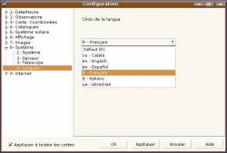
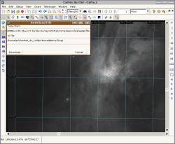
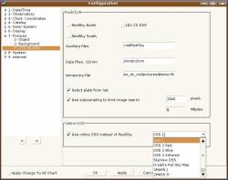

 The program can now be translated to any language. Thanks to voluntary translator it is already available in English, Catalan, Italian, Spanish, Ukranian and French.
If you are interested to translate for your language please read http://www.ap-i.net/skychart/en/translations
The help system as been change to use an extract from the online wiki at http://www.ap-i.net/skychart
It is quiet minimal at the moment but it is up to you to improve it!
 Online Pictures
This is the same function as previously available for the Realsky CDrom but all you need now is an Internet link.
Select the sky area of interest and click the “DSS” button to download and display the image for the corresponding location.
 You can configure which survey to use from the Pictures \ DSS setting. A number of interesting source are already configured but you can add more using the Internet \ Online DSS pictures menu.
Catalog build tool CatGen is now include with the main program. You can access this function from the “CatGen” button in the Catalog setting.
You can still build binary catalog as in previous version but it is also possible to build text file catalog. Text file catalog are intended to replace the “external catalog” in version 2.7, the advantage over binary catalog is you don't need to rebuild the catalog when the data change. A typical use is to maintain a list of recent nova you want to show on the chart.
Internet Proxy can be set in Configuration/Internet/Proxy if required.
Custom Labels can be added to the chart from the chart right click menu.
New scroll bar on each chart let you navigate directly to the full sky. At high zoom level it is better to use only the arrow but not touch the cursor because it is too sensitive.
Simulation Labels can be edited using Configuration/Date-Time/Time Simulation menu. You can select how many labels to show and the information to include.
Many bug fixed thanks to your testing. The new bug tracker work well, on 180 reports at the moment 160 where fixed.
About 300 patchs where commited to the source repository for this release. If you are interested by the detailed log you can read http://skychart.svn.sourceforge.net/viewvc/skychart/trunk/?view=log
It take more time than usual between 3.0.1.0 and 3.0.1.2. This is because all the testing as been done on the development version 3.0.1.1 refreshed about once a week during this period.
{kind=link}
{kind=link}
{kind=link}